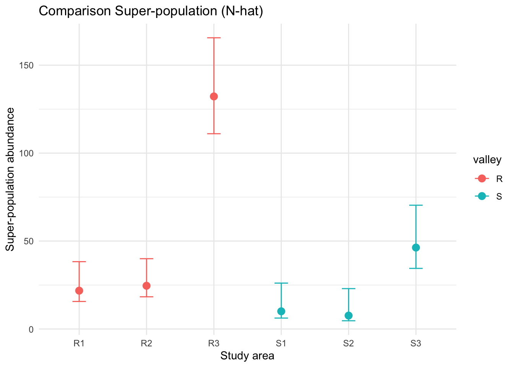
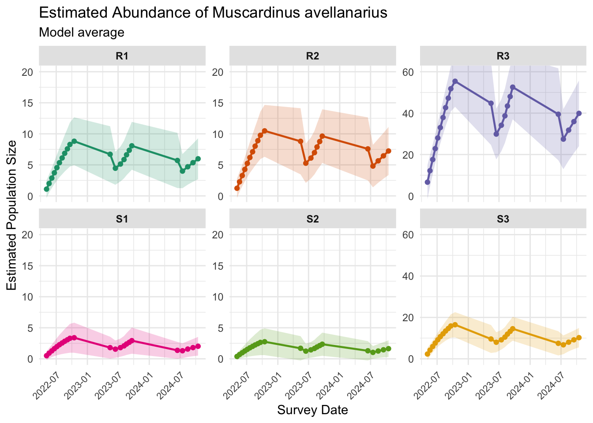
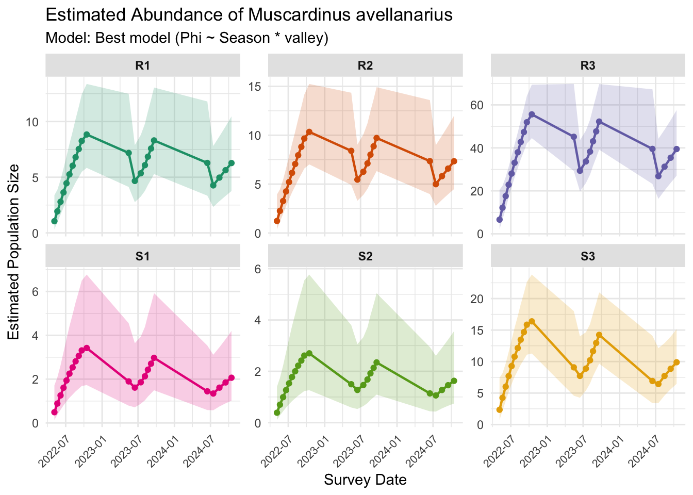
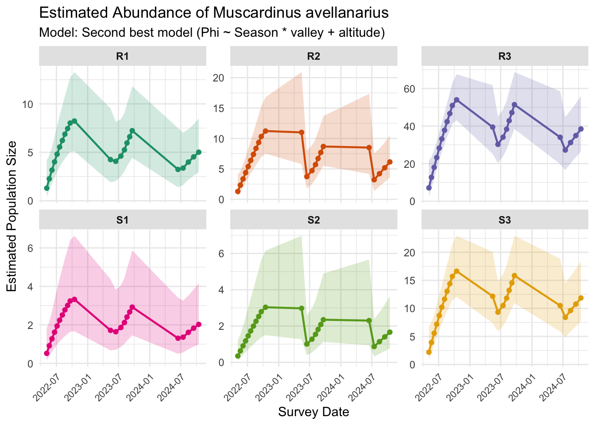
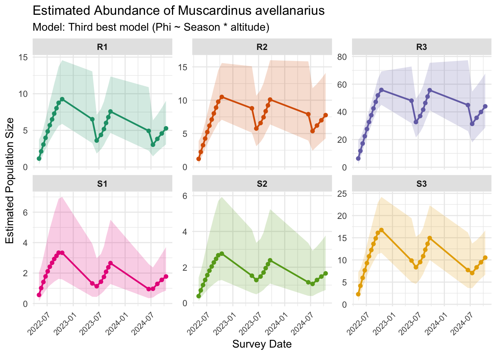

Warning: Software mark not found in path.
If you have mark executable, you will need to set MarkPath object to its location (e.g. MarkPath="C:/Users/Jeff Laake/Desktop"Report POPAN
| summary(all_data_ch$area) | |
|---|---|
| R1 | 12 |
| R2 | 14 |
| R3 | 74 |
| S1 | 5 |
| S2 | 4 |
| S3 | 23 |
A seguito della preparazione dei dati per le analisi POPAN, controlliamo innanzitutto il numero di individui diversi per ciascuna area di studio, che risultano decisamente più elevati per l’area R3 e, secondariamente, per l’area S3.
Prima di procedere con le analisi, abbiamo poi effettuato un test per la bontà dell’adattamento dei nostri dati, per verificare eventuali problemi di overdispersione (che sono stati esclusi dato il valore di \hat{c} < 1):
chi2 degree_of_freedom p_value
Gof test for CJS model: 47.143 63 0.932[1] "c_hat = 0.75"Dopo aver fittato i diversi modelli, abbiamo effettuato il confronto in termini di AICc:
| Phi | p | pent | N | model | npar | AICc | DeltaAICc | weight | Deviance |
|---|---|---|---|---|---|---|---|---|---|
| ~Season * valley | ~time | ~1 | ~group | Phi_season_valley | 34 | 951.9901 | 0.000000 | 0.7172499 | 110.95864 |
| ~Season * valley + altitude | ~time | ~1 | ~group | full_pent_constant | 36 | 955.4493 | 3.459177 | 0.1272096 | 108.76442 |
| ~Season * altitude | ~time | ~1 | ~group | Phi_season_altitude | 36 | 955.5627 | 3.572647 | 0.1201933 | 108.87789 |
| ~Season * valley + altitude | ~time | ~Season | ~group | full_pent_seasonal | 37 | 958.0106 | 6.020557 | 0.0353446 | 108.45351 |
| ~Season | ~1 | ~time | ~group | basic_demo | 31 | 979.1334 | 27.143301 | 0.0000009 | 146.36120 |
| ~Season | ~1 | ~time | ~group | constant_p | 31 | 979.1334 | 27.143301 | 0.0000009 | 146.36120 |
| ~1 | ~1 | ~1 | ~group | null | 9 | 979.5281 | 27.537979 | 0.0000008 | 200.24809 |
| ~Season * valley + altitude | ~time | ~time | ~group | full | 57 | 984.9305 | 32.940383 | 0.0000001 | 70.66029 |
Il modello migliore è {Phi(Season valley) p(time) pent(.) N(group)}*, dove group è la variabile di raggruppamento corrispondente all’area di studio. Tuttavia, notiamo che esistono altri due modelli inclusi nel model set definito da \Delta AICc < 4. Questi due modelli differiscono dal modello migliore per l’inclusione dell’altitudine come fattore che influenza il parametro di sopravvivenza.
Risultati sulle abbondanze
Abbiamo quindi proseguito le analisi effettuando un model averaging dei tre modelli migliori, calcolando il valore del parametro derivato N dal model averaging:
| par.index | estimate | se | lcl | ucl | fixed | note | group | age | time | Age | Time | valley | altitude | Mt | Estimate | LCL | UCL |
|---|---|---|---|---|---|---|---|---|---|---|---|---|---|---|---|---|---|
| 403 | 9.800619 | 4.934444 | 3.6533231 | 26.29172 | NA | NA | R1 | 0 | 1 | 0 | 0 | R | 1 | 12 | 21.800619 | 15.653323 | 38.29172 |
| 404 | 5.069047 | 3.687802 | 1.2180507 | 21.09538 | NA | NA | S1 | 0 | 1 | 0 | 0 | S | 1 | 5 | 10.069047 | 6.218051 | 26.09538 |
| 405 | 10.593519 | 4.846938 | 4.3209885 | 25.97151 | NA | NA | R2 | 0 | 1 | 0 | 0 | R | 2 | 14 | 24.593518 | 18.320988 | 39.97151 |
| 406 | 3.633657 | 3.063940 | 0.6959871 | 18.97084 | NA | NA | S2 | 0 | 1 | 0 | 0 | S | 2 | 4 | 7.633657 | 4.695987 | 22.97084 |
| 407 | 58.236502 | 13.452483 | 37.0313814 | 91.58422 | NA | NA | R3 | 0 | 1 | 0 | 0 | R | 3 | 74 | 132.236502 | 111.031381 | 165.58422 |
| 408 | 23.308905 | 8.436623 | 11.4664961 | 47.38198 | NA | NA | S3 | 0 | 1 | 0 | 0 | S | 3 | 23 | 46.308905 | 34.466496 | 70.38198 |
Nella tabella, la colonna estimate riporta i valori degli animali stimati ma non visti, alla quale va aggiunta la quota di animali effettivamente catturati (riportata in Mt). Per la super-popolazione, il valore stimato è quindi quello riportato in Estimate, con i relativi intervalli di confidenza approssimati (LCL e UCL) - scorrere la tabella verso destra per visualizzarli.

Nota tecnica: definizione di super-popolazione
Nel contesto dei modelli di cattura-ricattura per popolazioni aperte (Schwarz & Arnason, 1996), la super-popolazione (N) è definita come il numero totale di individui unici che sono stati disponibili per la cattura nell’area di studio almeno una volta durante l’intero arco temporale dell’indagine.
A differenza della stima di abbondanza per singola occasione (\hat{N}_i), che rappresenta il numero di individui presenti in un preciso momento, la super-popolazione include:
- Individui presenti all’inizio dello studio (occasione 1).
- Tutti i nuovi recluti (nati o immigrati) che sono entrati nella popolazione tra la prima e l’ultima occasione di campionamento.
Matematicamente, la super-popolazione è la somma degli individui effettivamente catturati (M_t) e degli individui che si stima fossero presenti ma non sono mai stati intercettati dalle trappole (f_0). Rappresenta quindi una misura del “pool” totale di individui che quel particolare habitat è stato in grado di sostenere e ospitare durante il periodo monitorato.
Usare la super-popolazione ci permette di confrontare il valore biologico assoluto dei diversi siti (es. R3 vs S1) indipendentemente dalle fluttuazioni stagionali. Ad esempio, il valore di 132.2 per R3 ci dice che quel sito è passato attraverso un numero di individui totali molto superiore a S2 (7.6), confermando il ruolo dell’alta quota come serbatoio demografico primario.
Trend di abbondanza
Il seguente grafico mostra invece l’andamento temporale delle stime nelle diverse aree di studio sulla base dei risultati del model averaging:

Discusssione dei risultati sulle abbondanze
Il grafico illustra le stime di abbondanza (\hat{N}_i) per occasione di campionamento, derivate dal processo di multimodel inference (media pesata dei modelli con \Delta AICc < 4). Questo approccio ci permette di integrare l’incertezza strutturale dei modelli, bilanciando il peso dell’altitudine e della valle sulle stime finali.
Gradiente altitudinale e Super-popolazione
Si osserva una netta stratificazione dell’abbondanza legata alla quota, confermata dalla scala differenziata degli assi Y:
- Siti ad Alta Quota (R3, S3): presentano le popolazioni più consistenti. In particolare, R3 (quota massima) mostra una super-popolazione stimata significativamente superiore agli altri siti, suggerendo che le aree sommitali rappresentino l’habitat core per il moscardino in questo sistema.
- Siti a Bassa Quota (S1, S2): mantengono popolazioni numericamente ridotte. La scelta di utilizzare scale Y indipendenti consente di evidenziare la differenza rispetto ai siti ad alta quota.
Ciclicità stagionale e reclutamento
Tutte le aree di studio mostrano un andamento a “denti di sega” tipico della specie:
- Picchi post-riproduttivi: gli incrementi osservati verso la fine della stagione attiva (tardo autunno) riflettono il reclutamento dei nuovi nati (frazione stimata tramite il parametro pent), che gonfiano la popolazione prima del letargo.
- Contrazione invernale: il calo sistematico tra la fine di un anno e l’inizio del successivo è indicativo della mortalità invernale o della ridotta rilevabilità all’uscita dal letargo.
- Stabilità della sopravvivenza: la coerenza dei trend tra le valli (R ed S) suggerisce che i fattori ambientali stagionali agiscano in modo sincrono sull’intero gradiente, validando l’inserimento della variabile
Seasonnel modello top per la sopravvivenza (\Phi).
Precisione delle stime (intervalli di confidenza)
L’ampiezza delle bande ombreggiate (95% CI) riflette la solidità del campionamento:
- Nei siti con alto numero di catture (es. R3), l’incertezza aumenta leggermente nei picchi massimi, un comportamento atteso nei modelli POPAN dove la stima degli individui “mai visti” (f_0) è proporzionale alla dimensione della popolazione osservata.
- Il superamento del test di Goodness-of-Fit (\hat{c} \approx 1) ci rassicura sul fatto che non vi sia sovradispersione nei dati e che gli intervalli visualizzati siano statisticamente affidabili.
Notiamo che S2, nonostante avesse pochissime catture reali (Mt = 4), mostra ora una stima mediata molto solida e biologicamente plausibile grazie al contributo informativo degli altri siti del set (effetto del shrinkage o regolarizzazione tipica dei modelli gerarchici/multi-gruppo).
Nota tecnica: condivisione dei parametri e attendibilità dei trend
Un aspetto fondamentale da sottolineare per interpretare il grafico è che il modello POPAN non analizza ogni area in isolamento, ma come parte di un sistema integrato.
- Effetto della condivisione dei parametri (Parameter Sharing): il trend comune che osserviamo è dovuto al fatto che i parametri di sopravvivenza (\Phi) e, in parte, di probabilità di ingresso (pent) sono modellati come funzioni di variabili globali o condivise (es. ~Season o ~valley). Il modello assume che i driver biologici (es. il calo invernale dovuto al letargo) agiscano in modo simile su tutti i siti. Questo permette di “prendere in prestito forza” (borrowing strength) dai siti con molti dati (R3 e S3) per informare i siti dove le catture sono scarse (S1 e S2).
- Attendibilità nei siti con poche catture (S1, S2, R1, R2): il trend temporale visualizzato per i siti “poveri” di dati è largamente influenzato dalle dinamiche rilevate nei siti “ricchi”. Piuttosto che un limite, questo è un punto di forza: partiamo dal presupposto biologico che i moscardini in S2 non abbiano un ciclo stagionale completamente alieno rispetto a quelli in S3, ma che rispondano agli stessi segnali ambientali (e.g., temperatura).
- Stima dell’abbondanza: anche se il trend è guidato dai siti principali, il modello riesce comunque a calcolare un’abbondanza assoluta specifica per aree molto povere di catture come S2. Lo fa calibrando l’altezza della curva in base al numero di individui unici catturati (M_t) e alla probabilità di cattura stimata.
In conclusione, possiamo considerare le stime per le aree con poche catture come “stime informate dal contesto”: il modello ci permette di dire: “Dati i trend osservati nell’intera valle e i pochi avvistamenti fatti in S2, la stima più probabile della popolazione in quel sito è di circa X individui”. Senza questo approccio (ovvero analizzando S2 da solo), avremmo ottenuto stime estremamente instabili o non saremmo riusciti a far convergere il modello.
Appendice
Grafici dei trend per i tre modelli migliori, separati


